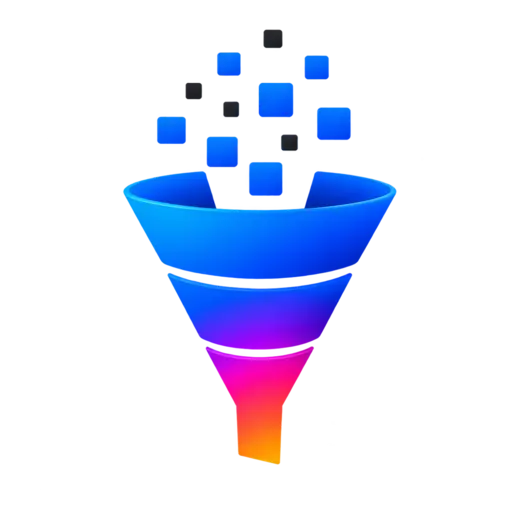
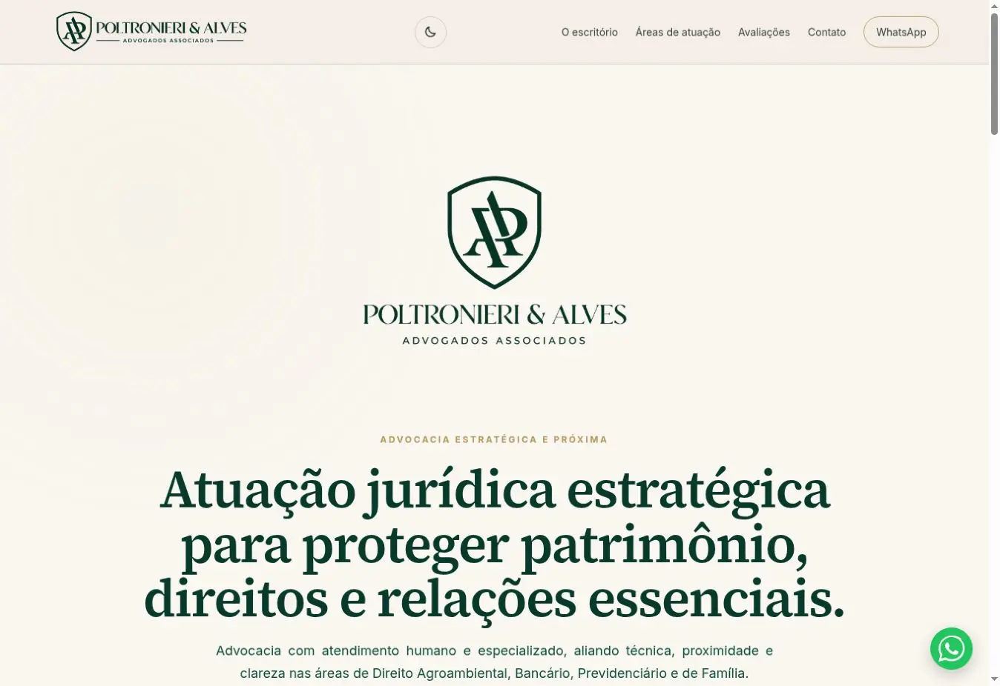
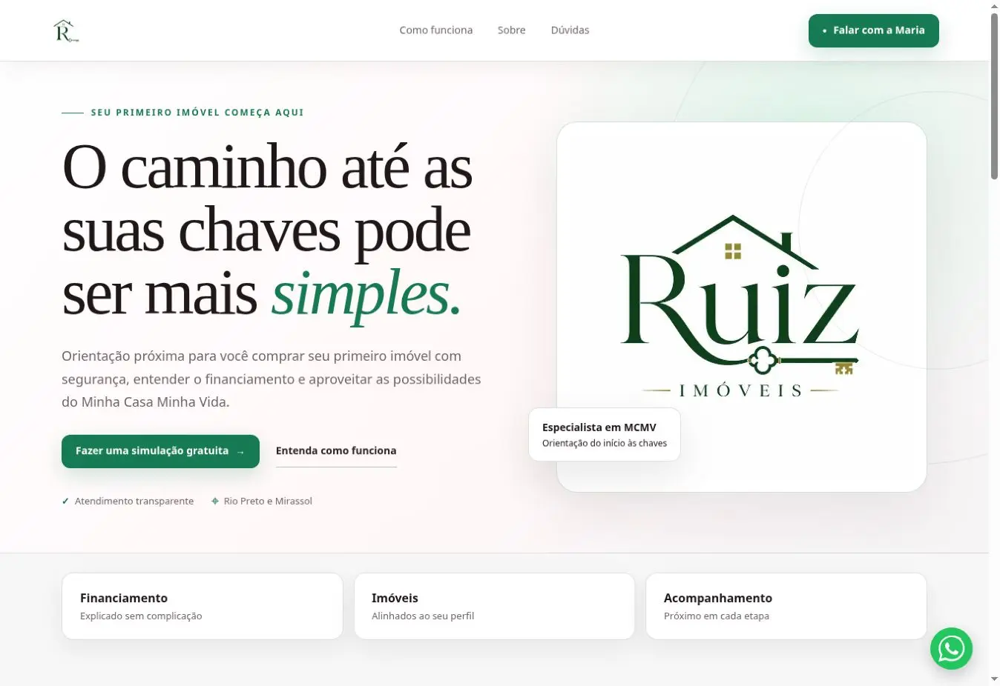

Gestão de tráfego pago
Planejamento, criação, monitoramento e otimização de campanhas no Meta Ads e Google Ads.
- Estrutura de campanhas
- Segmentação de públicos
- Acompanhamento de métricas
Tráfego pago e presença digital
Campanhas e sites pensados para atrair as pessoas certas, gerar oportunidades reais e fazer sua presença digital trabalhar com mais inteligência.

Mais que cliques.
Resultados que avançam.O que fazemos
Da mídia paga ao site, conectamos estratégia, tecnologia e análise para construir uma presença digital que gera oportunidades.
Planejamento, criação, monitoramento e otimização de campanhas no Meta Ads e Google Ads.
Análise da jornada para reduzir atritos e transformar mais visitas em contatos e vendas.
Leitura prática dos resultados para investir melhor e evoluir as campanhas continuamente.
Criação de sites rápidos, responsivos e preparados para transformar visitas em contatos.
Projetos selecionados
Estratégia, conteúdo e tecnologia reunidos em projetos pensados para o contexto de cada negócio.

Advocacia · Site institucional
Um canal próprio para apresentar o escritório, organizar as áreas de atuação e fortalecer a autoridade digital da marca.

Mercado imobiliário · Site de captação
Uma presença própria para posicionar o atendimento, explicar a jornada do primeiro imóvel e conduzir o visitante à conversa com a corretora.
Como o projeto acontece
Um processo organizado para entender o negócio, tomar decisões com clareza e construir uma presença digital coerente com a sua marca.
Conversar sobre meu projetoConversamos sobre sua empresa, seus objetivos e o papel do novo projeto.
Organizamos conteúdo, jornada do visitante, SEO e prioridades de conversão.
Copy, interface e desenvolvimento avançam como partes do mesmo trabalho.
Você acompanha uma versão navegável e reúne seus apontamentos para a revisão.
Revisamos mobile, links, formulários, domínio, SEO e mensuração.
Após a publicação, acompanhamos a entrega e corrigimos eventuais problemas do projeto.
Quem está por trás
Sou Pedro Esquerdo, desenvolvedor na Funil Digital. Criei a marca para valorizar negócios que precisam construir reconhecimento digital, com soluções pensadas para a realidade de cada projeto.
De São José do Rio Preto para empresas de todo o Brasil.
Atendimento diretoVocê conversa com quem entende, planeja e desenvolve o projeto.
Soluções sob medidaEstrutura, conteúdo e prioridades definidos conforme a realidade da sua marca.
Visão integradaSite, copy, domínio, SEO e mensuração tratados como partes do mesmo trabalho.
Dúvidas frequentes
Depende da sua oferta e do caminho de conversão. O diagnóstico identifica se uma página própria, o WhatsApp ou outra estrutura faz mais sentido.
O orçamento é planejado conforme objetivo, público, região e capacidade de atendimento. A recomendação é feita depois de entender o negócio.
Sim. O projeto pode incluir landing page ou site institucional, domínio, configuração técnica e fundamentos de SEO.
Vamos conversar?
Conte um pouco sobre seu negócio. Vamos entender o momento da sua marca e identificar o melhor próximo passo.
Instagram: @funildigital.mkt WhatsApp: (17) 99217-9836